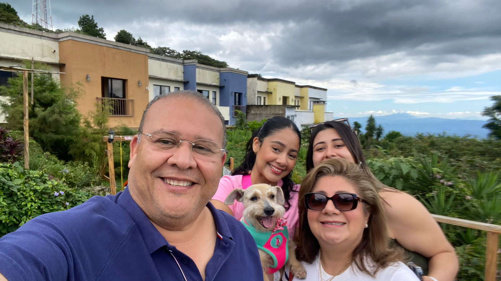

Familia
Mi familia la conforma mi papá Carlos Melara, mi mamá Roxana de Melara, mi hermana Andrea y mi perrita de 10 años Chloe. Considero que tengo un vínculo muy bonito con ellos.
Mi nombre es Camila Alejandra Melara Liévano, nací el 10 de agosto del 2004 en San Salvador. Actualmente me encuentro estudiando en la Escuela Superior de Economía y Negocios ESEN, cursando la carrera de Ingeniería en Software y Negocios Digitales. ¡Los invito a conocerme un poco más!
Mi familia la conforma mi papá Carlos Melara, mi mamá Roxana de Melara, mi hermana Andrea y mi perrita de 10 años Chloe. Considero que tengo un vínculo muy bonito con ellos.
Mi novio, Jorge, ha estado en mi vida desde los días del colegio, y llevamos casi 4 años juntos. Aunque estudiamos en la misma universidad, nuestras carreras son diferentes. Lo amo profundamente y cada día con él es una bendición. Nuestra relación me brinda mucha felicidad y apoyo, y valoro cada momento que compartimos.
Este es mi grupo de amigos, yo los quiero mucho. Todos estudian en la ESEN y lo gracioso es que todos, menos 3 personas, son de Economía y Negocios. Aunque no nos veamos tan seguido, nos guardamos mucho cariño y la pasamos bien juntos.
Soy una estudiante apasionada por el servicio social. En la universidad, me involucro en asociaciones y grupos estudiantiles para desarrollar habilidades blandas que me beneficiarán profesionalmente. Actualmente, soy la encargada de Marketing de ProBecas ESEN y sub-coordinadora General de MUN ESEN, lo que me ayuda a gestionar mejor mi tiempo y a conocer más sobre el mundo real.
En mi tiempo libre me gusta hacer muchas cosas, la principal es bailar. Me encanta bailar y lo he hecho desde que estoy pequeña, considero que es una buena forma de soltar el estrés y reconectar con uno mismo. Además me gusta ir al gimnasio y dibujar de vez en cuando.
Me gusta Ariana Grande como cantante porque su voz potente y versátil transmite emociones de manera increíble. Su capacidad para combinar diferentes géneros y su estilo único la hacen destacar. Además, sus letras personales y profundas resuenan conmigo, y su autenticidad y dedicación al arte la convierten en una artista que siempre me inspira y entretiene.